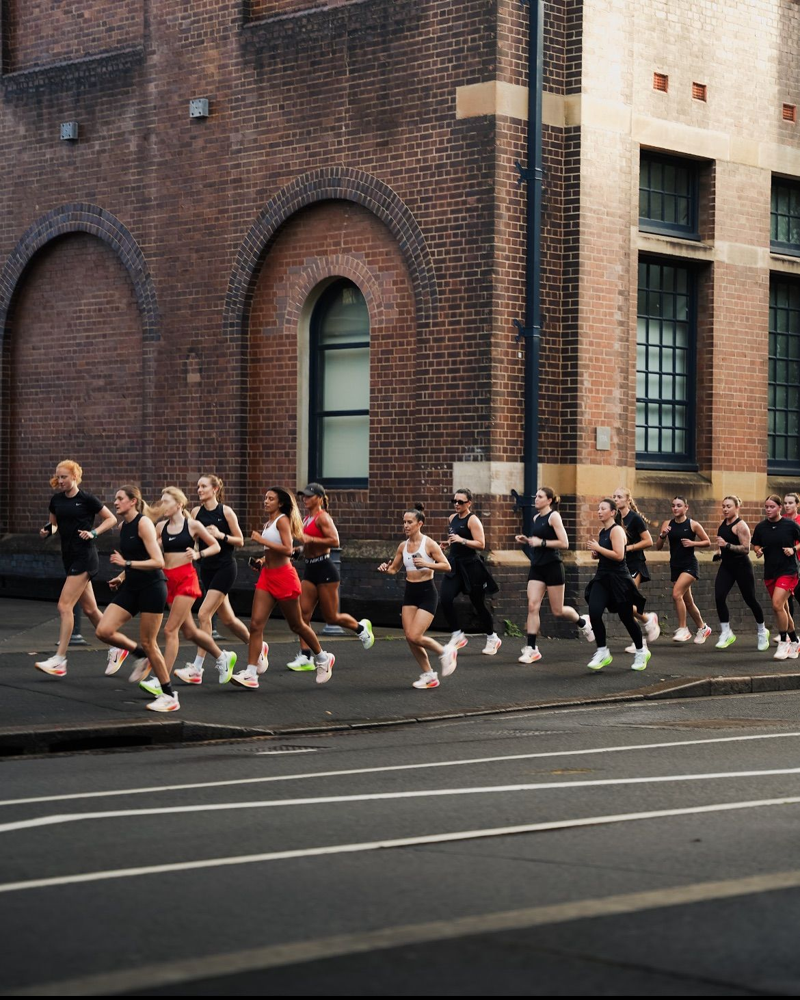
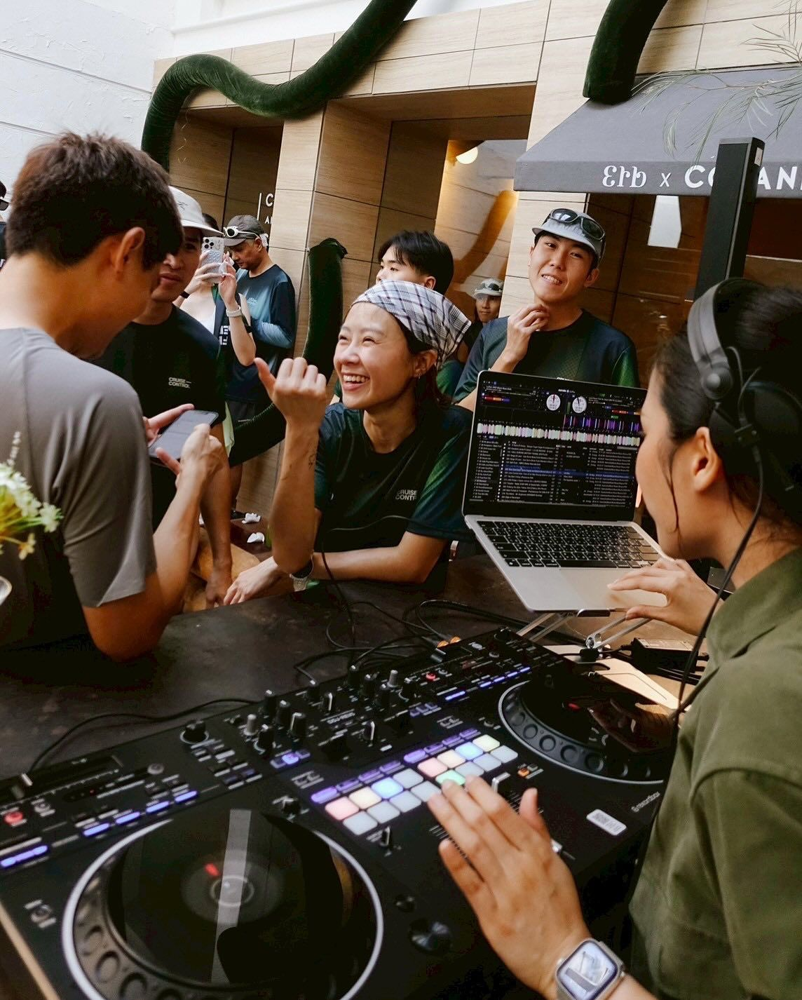
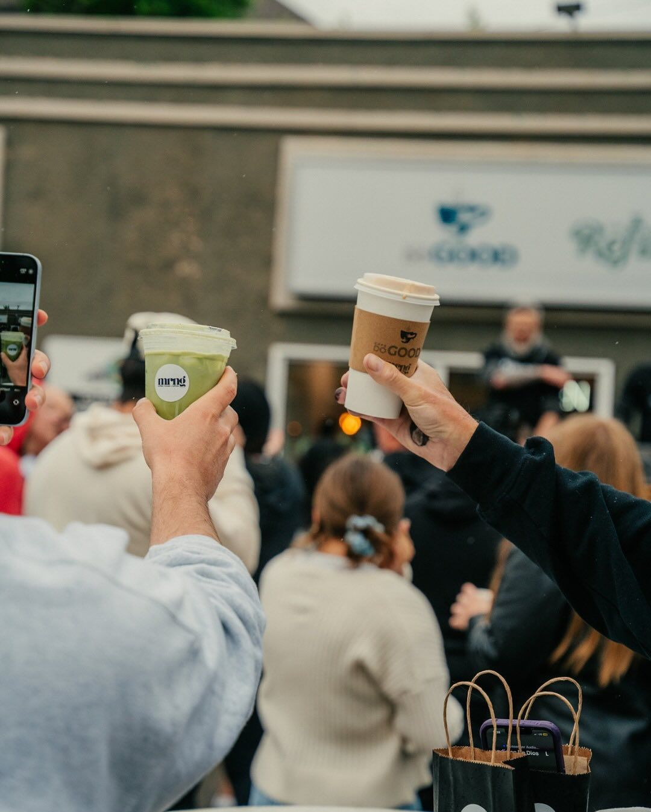
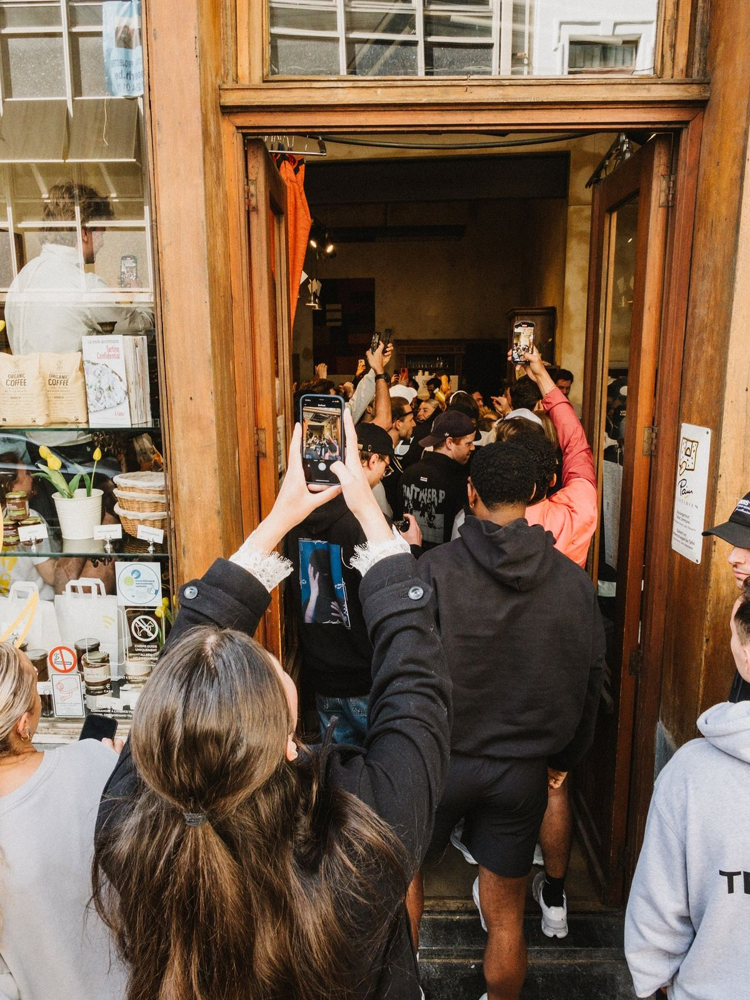
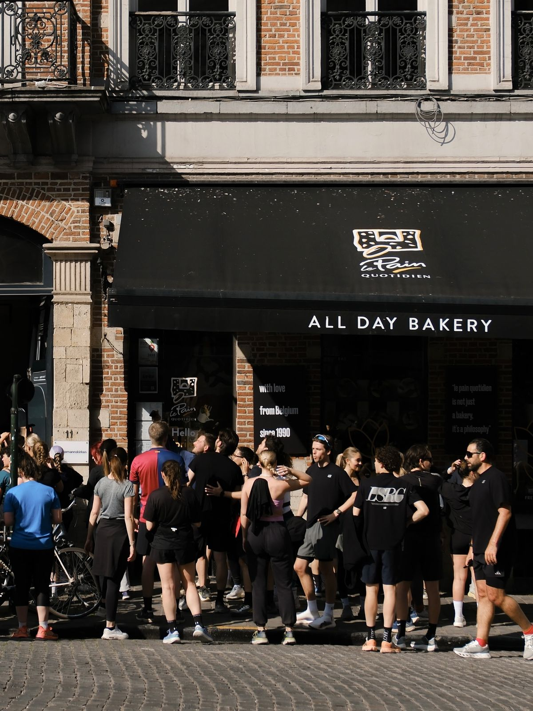
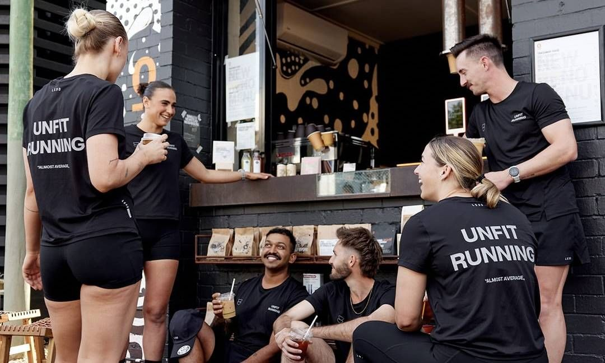
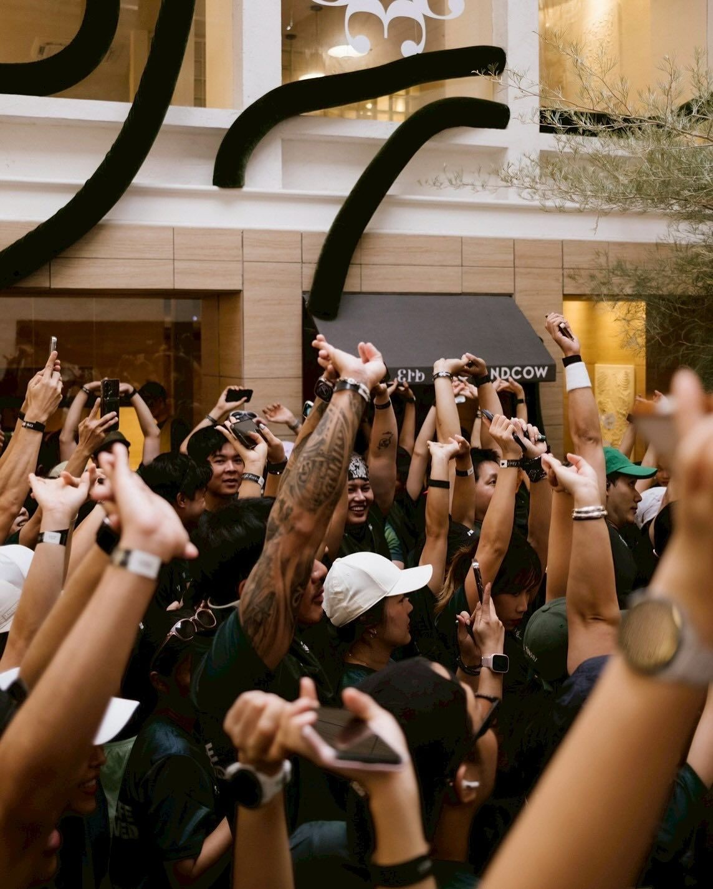

Trace Run Club

0K+
Active Members
Trace Run Club is a global network of running communities. Every chapter is led by a local Run Captain who organises weekly group runs and training sessions in their city.
0+
Local Chapters
Whether you're running your first 5K or chasing a hundred-miler, there is a Trace Run Club chapter built for you — road, trail, track, and everything in between.
0
Countries
Members get exclusive training plans, monthly challenges, priority race entry, and access to the global Trace app — free, always.
Jul 5, 2026
Bangkok, Thailand · 6:00 AM
Saturday Long Run — Lumpini Park Loop · 18 km
Jul 8, 2026
Tokyo, Japan · 5:30 AM
Dawn Tempo Run — Imperial Palace Circuit · 10 km
Jul 12, 2026
London, United Kingdom · 7:00 AM
Sunday Trail Session — Richmond Park · 22 km
Jul 19, 2026
New York, USA · 6:30 AM
Trace NYC — Central Park 10K Time Trial
Jul 26, 2026
Sydney, Australia · 6:00 AM
Harbour Bridge Sunrise Run · 14 km
Aug 2, 2026
Berlin, Germany · 7:00 AM
Trace Berlin — Tiergarten Marathon Prep Run · 30 km
Aug 9, 2026
Seoul, South Korea · 6:00 AM
Han River Night Run — Yeouido to Mapo · 12 km

Global Community
120,000+ runners across 58 countries running together every week.

Member Satisfaction
94% of Trace Run Club members say showing up changed their relationship with running.

Member Support
96% of members report feeling genuinely supported by their chapter captain.

Engagement Strength
91% of members say they're proud to wear Trace and represent their local club.

Trace Run Club Week
Our annual global week brings every chapter together — same route, same day, different city.
Active Chapters
Bangkok
Thailand · 3 chapters
Tokyo
Japan · 5 chapters
London
United Kingdom · 8 chapters
New York
USA · 12 chapters
Sydney
Australia · 4 chapters
Berlin
Germany · 6 chapters
Seoul
South Korea · 4 chapters
Dubai
UAE · 2 chapters
Paris
France · 5 chapters
São Paulo
Brazil · 3 chapters
Cape Town
South Africa · 2 chapters
Singapore
Singapore · 3 chapters

Global Run Club
Your first run with Trace is waiting. Download the free app and find your chapter today.